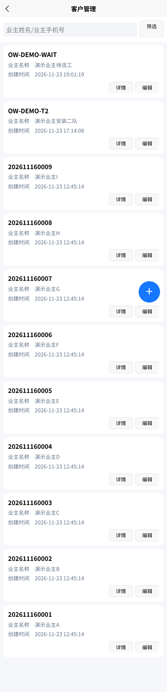

业主管理
这个模块干什么
登记光伏业主（客户）的基本资料和证件照片，为后续商机初勘提供业主档案。业主编号在保存成功后由系统生成。
谁来用
开发经理（如 sales）负责新建和编辑。其他有查看权限的角色可以打开详情，但不能改。
从哪里进入
- 现场端：底部「应用」→「线索管理」→「业主管理」。右下角「＋」为新建。
- 电脑端：首页「业主管理」，或左侧「开发/交付」下的相应菜单。
进入后，列表页标题可能显示为「客户管理」，与应用入口名称「业主管理」是同一功能。

图：现场端业主列表。每条有「详情」「编辑」，右下角「＋」新建。
操作步骤
- 点「＋」打开新建页。业主编号处显示「保存后生成」。
- 填写资料。带星号的为必填，主要包括：客户类型（个人 / 企业）、身份证头像面和国徽面、业主名称、业主手机号、身份证号码。业主来源固定为「客户管理」。认证方式页面上会显示「运营商三要素」，当前只作登记，并不做实际核验。
- 年龄由 18 位证件号自动推算，不能手改。证件有效期可填写发证日期；打开「长期」后不必再填失效日期。
- 联系人、联系人电话、身份证地址、与业主关系、业主备注为选填。
- 点「保存」。成功后返回列表，可以看到系统生成的业主编号。
离开未保存的页面时，系统会询问是否确定离开。
状态与按钮
业主列表不是按审批状态分页签的档案列表。常见按钮为「详情」「编辑」。有写权限时可以编辑；没有写权限或只读打开时，只能查看。
可用搜索框按业主姓名、业主手机号查找，也可以用筛选进一步拦住列表。
保存之后会发生什么
业主档案写入系统，即可在新建商机初勘时被选择。保存业主本身不会自动生成电站，也不会进入审核中心。
注意事项
- 请手工填写业主信息和证件号。证件照片可以上传，但证件识别尚未开放，不要等待系统自动读出证件号。
- 请使用真实、清晰的证件照片，不要把演示数据或他人信息当作正式档案。
- 提交商机初勘前，请确认已选对业主。